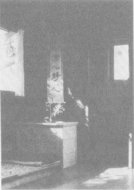

SETTING
As you begin to calm your mind through meditation or mantra, you become increasingly aware of the forces acting upon you—forces within as well as outside your body. Previously you sought continuous stimulation but now you gravitate towards situations in which there is less and less stimulation. For some well advanced upon the path, the cave—the traditional haunt of yogis—is sought, for here the rock is insulation against many of the subtle vibrations which are distracting for those who have become sensitive.
“Where there is fire, or in water or on ground which is strewn with dry leaves, where there are many ant-hills, where there are wild animals, or danger, where four streets meet, where there is too much noise, where there are many wicked persons, Yoga must not be practiced.”—Vivekananda
For most Westerners embarking upon their sadhana, a cave is neither a desirable or even a possible alternative. Not desirable in the sense that their karma still requires commerce with worldly stimulation. Under such conditions the seeking out of a cave and attempting to pursue a sadhana such as that of the Tibetan renunciate, Milarepa, can start out and remain a subtle ego trip. It would seem wiser to start your sadhana from exactly where you are, and then let any changes occur in your style of life and environment in a slow and natural fashion. For it is true that at the early stages, any waves you make in carrying out your sadhana merely created more karma. Let your inner pull towards enlightenment lead you, so to speak. Let the Light pull you towards itself (like a moth to a flame). You will finally seek more and more pure environments because you “have to”—because it’s the only thing you can do, not because you think you ought to.
Where you are at this moment is the first thing to assess. Married or single? Children? Parents? Existing contracts with other beings (social, vocational, economic, religious, national, familial, etc.)? Available opportunities?
Perhaps the most appropriate initial step in view of your present predicament is to continue with your daily life in the customary manner with the simple addition of a mantra. Such a mantra can initially be used for 15 minutes in the morning and evening as suggested by Maharishi Mahesh in his program for Transcendental Meditation. You can set up a corner of your room for this purpose.
Create a quiet corner in your home . . . an Om Home . . . a launching pad to the infinite . . . a meditation seat . . . a shrine. Bring to it that which is simple and pure: a mat, perhaps a candle, maybe a picture of a realized being whose life has turned you on—Buddha, or Christ, or Ramakrishna, or Ramana Maharshi, possibly some incense. Create a seat in which you can sit comfortably with spine straight out and turn off your body. Those who have developed the triangular seat of padmasa (full lotus), siddhasa (half lotus), or even sukhasa (the easy pose) . . . remember, no suffering.
In this corner establish a regular ritual for purification, for reflection, for calming the mind. Just as water wears away stone, so daily sadhana will thin the veil of avidya (ignorance).
At quite the opposite end of the continuum is the total moment-to-moment discipline of each thought and act required in a monastery or ashram. Here is but one example, presently functioning in the United States. It is Tassajara, a Zen Buddhist center in California.
